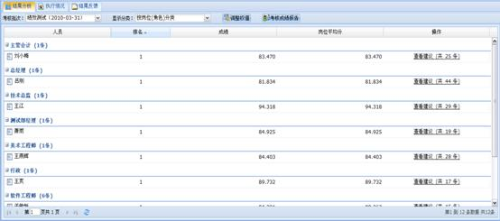

绩效管理模块的主要实现了360度绩效考核的功能。主要功能包括考核管理、考核结果管理、问卷库管理和述职模板管理。
点击查看如何执行绩效考核？
管理问卷库主要负责管理多份绩效考核问卷，包括增、删、改问卷，修改问卷中的题目（包括选择题、评价题和打分题），问卷预览等。
4.9.1.1 问卷管理
1、新建问卷
通过工具栏或右键菜单的“添加”添加问卷。
2、复制问卷
在问卷列表中选择一个问卷，通过工具栏或右键菜单或操作区的“复制”复制问卷。
3、修改问卷
在问卷列表中选择一个问卷，通过工具栏或右键菜或操作区的“修改”，修改问卷基本信息。
4、删除问卷
在问卷列表中选择一个问卷，通过工具栏或右键菜或操作区的“删除”删除一个问卷。
4.9.1.2 问卷设置
在问卷列表中选择一个问卷，通过工具栏或右键菜单或操作区的“设置”打开问卷设置页面，如下图：
图 管理问卷界面
4.9.1.2.1 考核方面管理
1、添加考核方面
（1）添加方面：通过工具栏或右键菜单的“添加方面”添加考核方面。
（2）添加子方面：在考核方面目录中通过右键菜单的“添加子方面”添加考核方面的下级方面。
Tips：
1、权值最大不超过1。
2、各方面权值相加总和也不能超过1。
3、同一个方面的各个子方面权值相加总和也不能超过1。
2、修改考核方面
在考核方面目录中选择一个方面，通过工具栏或右键菜单的“修改方面”修改方面信息。
3、删除考核方面
在考核方面目录中选择一个方面，通过工具栏或右键菜单的“删除”删除。
4、拖拽调整顺序
拖拽调整同级考核方面之间的顺序，在考核方面目录中选择一个方面，将其拖拽到目标位置放开鼠标左键，调整成功。
4.9.1.2.2 问卷题目管理
1、添加问卷题目
在考核方面目录中选择一个叶子考核方面，通过题目列表工具栏或右键菜单的“添加”添加考核题目。
Tips：
有子方面的考核方面不能添加题目，即在考核方面目录中选择有子方面的考核方面，题目列表工具栏的“添加”按钮不可用，题目列表右键菜单没有“添加”。
2、修改问卷题目
在考核方面目录中选择一个方面，在题目列表中选择一个题目，通过右键菜单或操作区的“修改”修改题目。
Tips：
在考核方面目录中选择一个有子方面的方面，其题目列表中显示所有子方面的题目。
3、删除问卷题目
在考核方面目录中选择一个方面，在题目列表中选择一个题目，通过工具栏或右键菜单或操作区的“删除”删除一个题目。
4、调整问卷题目顺序
在考核方面目录中选择一个方面，在题目列表中选择一个题目，通过工具栏的“上移”、“下移”调整题目之间的顺序。
4.9.1.2.3 管理题目的选项
1、添加题目选项
在题目列表中选择一个题目，通过选项列表工具栏的“添加”按钮添加选项。
Tips：
1、选择题和评价题的添加信息不同
2、打分题不用添加选项。
2、修改题目选项
在选项列表中选择一个选项，在题目列表中选择一个题目，通过右键菜单或操作区的“修改” 修改选项。
3、删除题目选项
在选项列表中选择一个选项，在题目列表中选择一个题目，通过工具栏或右键菜单或操作区的“删除”删除一个选项。
4、调整题目选项顺序
在选项列表中选择一个选项，通过工具栏的“上移”、“下移”调整选项之间的顺序。
4.9.1.3 预览问卷
预览问卷主要负责预览问卷的内容，以便于问卷的修改。
在问卷列表中选择一个问卷，通过工具栏或右键菜单或操作区的“预览”预览问卷内容。系统会弹出如下图：
图 预览问卷内容页面
4.9.1.4 问卷授权
授权主要负责对已创建的考核问卷进行读写控制，权限分“读”、“写”以及“读写”三种，只有拥有权限的人才能看到该考核问卷并进行权限范围内的操作，创建人默认拥有“读写”的权限，并且只有创建人可以对考核问卷进行授权操作。具体权限参见下表：
图 考核管理主界面
4.9.2.1 考核管理批次
管理考核批次主要负责对考核批次信息的增、删、改以及复制等操作。同时也是考核启动、取消和终止的入口，主界面如下图所示：
图 考核批次主界面
4.9.2.1.1 考核批次基本管理
1、添加考核批次
通过工具栏或右键菜单的“添加”添加考核批次。
2、复制考核批次
在考核批次列表中选择一个批次，通过工具栏或右键菜单的“复制”复制考核批次。
3、修改考核批次
在考核批次列表中选择一个批次，通过工具栏或右键菜单或操作区的“修改”修改考核批次。
4、删除考核批次
在考核批次列表中选择一个批次，通过工具栏或右键菜单或操作区的“删除”删除一个考核批次。
4.9.2.1.2 授权
授权主要负责对已创建的考核批次进行读写控制，权限分“读”、“写”以及“读写”三种，只有拥有权限的人才能看到该考核批次并进行权限范围内的操作，创建人默认拥有“读写”的权限，并且只有创建人可以对考核批次进行授权操作。具体权限参见下表:
1、进入授权界面
在考核批次列表中选择一个登录用户创建的批次，通过工具栏或右键菜单的“授权”进行授权。
2、选择授予权限的人员
在弹出的“添加授权人员”界面选择“添加”按钮，在弹出的选择单位界面选择单位，然后选择“下一步”，在选择人员界面选择一个或多个人员，选择“确定”返回“添加授权人员”界面。
3、授权
在“添加授权人员”界面中单击列表中一个人员的“授权”一列，授权变为编辑状态，在下拉菜单中选择授予的权限，如下图所示：
图 授权界面
4、取消授权
在“添加授权人员”界面勾选列表中一个或多个人员，通过工具栏的“取消”按钮取消。
4.9.2.1.3 实施述职
1、执行述职
通过工具栏或右键菜单的“执行述职”执行述职。执行述职成功后，考核状态由“新建”变为“正在执行述职”。此时用户可操作的项由“执行述职”、“执行考核”变为“取消述职”、“结束述职”和“查看述职报告”，工具栏按钮和右键菜单状态会发生相应的变化，如下图所示：
图 执行述职成功后的界面
Tips：
1、执行述职后，“岗位/项目角色管理”、“考核人员管理”模块列表均为只读状态。
2、每个岗位/项目角色的每个角度都有考核执行人，每个接受考核的人员都要有考核执行人，否则执行述职会提示“请先设置考核执行人，再启动述职！”。
2、取消述职
通过工具栏或右键菜单的“取消述职”取消述职。取消述职成功后，考核批次恢复为“新建”状态，此时用户可操作的项恢复到只有“执行述职”和“执行考核”两项，工具栏按钮和右键菜单状态也会发生相应的变化，如下图所示：
图 取消述职成功后的界面
3、结束述职
通过工具栏或右键菜单的“结束述职”结束述职。成功结束述职后，考核批次状态由“正在执行述职”变为 “述职结束”。此时用户可操作的项由“取消述职”、“结束述职”和“查看述职报告”变为“查看述职报告”、“执行考核”，工具栏按钮和右键菜单状态也会发生相应的变化，如下图所示：
图 成功结束述职后的界面
4、查看述职报告
通过工具栏或右键菜单的“查看述职报告”，系统弹出如图所示的查看述职报告。在该界面用户可以通过述职状态对述职报告的执行情况进行监控，还可以选择操作区的“查看述职报告”查看述职报告的详细内容如下图所示：
Tips：
考核状态除“新建”外，用户都有权限查看已完成的述职报告。
图 述职报告执行情况
图 个人述职报告
4.9.2.1.4 实施考核
1、执行考核
通过工具栏或右键菜单的“执行考核”执行考核。执行考核成功后，考核状态变为“正在执行考核”，此时用户可操作的项由“执行述职”、“执行考核”变为“取消考核”、“结束考核”和“查看述职报告”、“监控考核状态”，工具栏按钮和右键菜单状态会发生相应的变化，如下图所示：
图 成功执行考核后的界面
Tips：
执行考核后，“岗位/项目角色管理”、“考核人员管理”模块列表均为只读状态。
2、取消考核
通过工具栏或右键菜单的“取消考核”取消考核。取消考核成功后，考核批次状态恢复为“新建”，此时用户可操作的项恢复到只有“执行述职”和“执行考核”两项，工具栏按钮和右键菜单状态也会发生相应的变化，如下图所示：
图 取消考核成功后的界面
3、结束考核
通过工具栏或右键菜单的“结束考核”结束考核。结束考核成功后，考核批次状态变为“考核结束”，此时用户可操作的项由“取消考核”、“结束考核”和“查看述职报告”、“监控考核状态”变为“查看述职报告”、“监控考核状态”、“查看考核结果”和“反馈考核结果”，工具栏按钮和右键菜单状态也会发生相应的变化，如下图所示：
图 结束考核成功后的界面
4、监控考核状态
通过工具栏或右键菜单的“监控考核状态”监控考核状态。考核状态为“正在执行考核”或 “考核结束”时，用户都有权限监控考核状态。如下图所示：
图 监控考核状态窗口
5、查看考核结果
通过工具栏或右键菜单的“查看考核结果”查看考核结果。考核状态为“考核结束”时，用户有查看考核结果的权限，如下图所示：
图 查看考核结果窗口
Tips：
进入查看考核结果窗口后，操作同结果查询面板。
6、反馈考核结果
通过工具栏或右键菜单“考核结果反馈”反馈考核结果。在弹出的考核结果反馈界面可以“反馈考核结果” 以及“查看考核结果”，如下图所示：
图 反馈考核结果窗口
（1）反馈考核结果
反馈多个人的考核结果：在列表中勾选多行，通过工具栏的“反馈考核结果”按钮给多个人反馈一个或多个批次的考核结果。
反馈一个人的考核结果：在列表中勾选多行，通过工具栏或右键菜单的“反馈考核结果”给一个人反馈一个或多个批次的考核结果。
Tips：
反馈的考核结果在邮箱中查看。
（2）查看考核结果
考核批次状态为“考核结束”时，用户有反馈考核结果的权限。
4.9.2.2 管理考核岗位/项目角色
管理接受考核的岗位/项目角色的增、删、改等操作。同时也是添加考核角度和考核人员的入口。主界面如下图所示：
图 项目角色管理窗口
4.9.2.2.1 接受考核的岗位/项目角色基本管理
1、添加考核岗位
（1）通过工具栏和右键菜单“添加岗位”添加考核岗位。
（2）在弹出的“添加岗位”界面添加考核岗位及岗位下的人员是以导航的形式实现的。第一步，在列表中勾选一个或多个要考核的岗位，点击“下一步”，进入添加接受考核的人员界面。第二步，在列表中勾选一个或多个人员，然后选择“完成”按钮，完成人员的添加。
Tips：
如果想重新选择岗位，可以选择“上一步”返回添加岗位界面重新选择岗位。
2、添加项目角色
（1）通过工具栏或右键菜单的“添加项目角色”添加考核角色。
（2）添加考核角色及角色下的人员是以导航的形式实现的。方法同添加考核岗位。
3、修改考核岗位/项目角色
通过右键菜单或操作区的“修改”修改考核岗位/项目角色的备注信息。
4、删除考核岗位/项目角色
通过工具栏或右键菜单或操作区的“删除”删除考核岗位/项目角色。
4.9.2.2.2 述职模板
1、选择述职模板
通过工具栏或右键菜单的“选择述职模板”为岗位/项目角色选择述职模板。述职模板添加成功后在列表的“述职模板”列显示。执行述职时相应的岗位/项目角色以选择的述职模板为模板填写述职报告。
2、取消述职模板
通过工具栏或右键菜单的“取消述职模板”取消述职模板。
4.9.2.3 管理考核角度
管理考核角度主要负责考核角度及考核所用试卷的增、删、改以及角度权值的设定等操作。主页如下图所示：
图 执行考核的角度窗口
4.9.2.3.1 考核角度基本管理
1、添加考核角度
（1）批量添加考核角度
在接受考核的岗位/项目角色列表中勾选多条数据，通过工具栏的“添加执行考核的角度”为多个岗位/项目角色添加考核角度。
（2）添加一个考核岗位/项目角色的考核角度
在接受考核的岗位/项目角色列表中勾选一条数据，通过工具栏或右键菜单的“添加执行考核的角度”添加考核角度。也可以通过执行考核的角度列表工具栏的“添加执行考核的角度”按钮添加。
Tips：
同一个岗位/项目角色的考核角度权值最大不应超过1，且建议各角度权值相加总和为1。
2、修改考核角度
在执行考核的角度列表中选择一个角度，通过右键菜单或操作区的“修改”修改考核角度。
3、删除考核角度
（1）批量删除考核角度
在执行考核的角度列表中选择多个角度，通过工具栏的“删除”按钮删除。
（2）删除一个考核角度
在执行考核的角度列表中选择一个角度，通过工具栏或右键菜单或操作区的“删除”删除。
4.9.2.4 管理角度考核执行人
管理角度考核执行人主要负责为某一个岗位或项目角色添加或删改默认的考核执行人。用户可通过应用或恢复角度考核执行人，为接受考核的人员添加具体的考核执行人，省去了用户为每个接受考核的人员设置考核执行人的大量时间，便于操作。主界面如下图所示：
图 角度考核执行人窗口
1、添加角度考核执行人
通过执行考核的角度列表工具栏或右键菜单或角度考核执行人列表工具栏的“添加角度考核执行人”添加角度考核执行人。
2、删除角度考核执行人
（1）批量删除考核角度
在角度考核执行人列表中选择多个角度考核执行人，通过工具栏的“删除”按钮删除。
（2）删除一个考核角度
在角度考核执行人列表中选择一个角度考核执行人，通过工具栏或右键菜单或操作区的“删除”删除。
4.9.2.5 管理接受考核的人员
管理接受考核的人员主要负责接受考核的人员的增、删、改以及应用默认执行人等操作。主界面如下图所示：
图 接受考核的人员窗口
4.9.2.5.1 接受考核的人员基本管理
1、添加接受考核的人员
在接受考核的人员列表中选择一个人员，通过工具栏的“添加接受考核的人员”按钮添加选择人员所在的岗位/项目角色中的人员。
Tips：
通过接受考核的岗位/项目角色列表区工具栏或右键菜单的“添加接受考核的人员”添加接受考核的人员。
2、修改接受考核的人员
通过工具栏或右键菜单或操作区的“修改”修改接受考核的人员。
3、删除接受考核的人员
通过工具栏或右键菜单或操作区的“删除”删除接受考核的人员。
4.9.2.5.2 恢复默认执行人
在接受考核的人员列表中选择一个人员，通过工具栏或右键菜单或操作区的“恢复默认执行人”恢复默认执行人，使选择的接受考核人员对应的考核执行人全部改为该人员所在岗位/项目角色所对应的角度考核执行人中已设置的人员。
4.9.2.6 管理考核执行人
管理考核执行人主要负责考核执行人的增、删等操作。主界面如下图所示：
图 考核的执行人窗口
1、添加考核执行人
通过接受考核的人员列表工具栏或右键菜单或考核的执行人列表工具栏的“添加考核执行人” 添加。
Tips：
如果考核人员所在的岗位/角色未设置考核角度，则不能添加考核执行人，需要先设置考核角度后，再添加考核执行人。
2、删除考核执行人
（1）批量删除考核角度
在考核的执行人列表中选择多个考核执行人，通过工具栏的“删除”按钮删除。
（2）删除一个考核角度
在考核的执行人列表中选择一个考核执行人，通过工具栏或右键菜单或操作区的“删除”删除。
述职或考核主要负责形成临时任务分配给每个执行述职或考核的人，执行人查看我的任务中临时任务列表并完成述职或考核，提交的结果可在考核管理面板中查看。
述职任务启动以后，接受考核的人员会在各自“我的任务”中接收到“填写述职报告”的临时任务，点击标题的链接可进入填写述职报告页面。也可以在主页侧边栏的任务中直接选择“填写述职报告”的任务，如下图所示。述职报告提交后，可在考核管理面板中查看其述职报告内容。
图 临时任务中填写述职报告
图 主页侧边栏中填写述职报告
考核任务启动以后，考核执行人会在各自“我的任务”中接收到考核相关的临时任务，点击标题链接可进入实施考核的页面。也可以在主页侧边栏的任务中直接选择考核的任务。填写考核问卷页面如下图所示，如果执行考核之前执行了述职，那么可以查看被考核人员的述职报告，在填写考核问卷时可以对每个方面填写建议。
图 执行考核的窗口
结果查询主要是查看历史考核批次的考核执行进度和执行情况，从不同侧面查看某一批次考核结果，查看某人的历次考核结果，并将结果反馈到个人信箱中等。
结果分析主要负责从不同侧面查看某一批次考核结果，查看某人的历次考核结果，将考核结果输出等。用例如图4‑213所示，结果分析界面如下图所示：

图 结果分析界面
1、查看考核结果
在工具栏先选择考核批次，然后在显示分类下拉框中选择分类，在结果分析列表中显示符合条件的数据。
Tips：
按各个分类查看考核结果时，可通过调整权值动态查看结果的变化，方便用户更好的了解被评人员在各方面的表现情况。
2、考核成绩报告
通过工具栏的“考核成绩报告”按钮，可以将三类考核成绩（综合成绩、考核角度成绩、考核方面成绩）列表输出到HTML文件中，便于用户打印。
执行情况主要负责查看历史批次的考核执行进度及执行情况。主界面如下图所示：
通过工具栏的考核批次下拉框选择不同的考核批次，在列表中将显示对应考核批次的考核执行情况。
图 执行情况窗口
用户针对某批次的考核结果进行反馈后，被考核人员可以在信箱中查看到个人的考核结果反馈信息，内容包括该人员在历次考核中综合成绩、各角度考核成绩以及各方面考核成绩的结果及分析图表。
主界面如下图所示，通过工具栏的考核批次下拉框，选择不同的考核批次，列表中将显示对应批次的考核结果。
图 结果反馈窗口
在邮箱中选择查看“考核结果反馈单”，如下图所示：
图 查看反馈结果的邮件入口
结果反馈单如下图所示：
图 个人考核结果反馈信息
负责管理多份述职报告模板。包括新建模板、修改模板、删除模板、预览模板等功能。在考核管理中设置考核岗位/项目角色时，可对述职模板加以应用，述职任务发布后，不同述职对象将在相应模板基础上填写述职报告。
1、新建述职模板
通过工具栏或右键菜单的“添加”添加述职模板。
2、修改述职模板
在述职模板列表中选择一个模板，通过工具栏或右键菜单或操作区的“修改”修改述职模板。
3、删除述职模板
在述职模板列表中选择一个模板，通过工具栏或右键菜单或操作区的“删除”删除一个述职模板。
4、预览述职模板
在述职模板列表中选择一个模板，通过工具栏或右键菜单或操作区的“预览”预览述职模板。